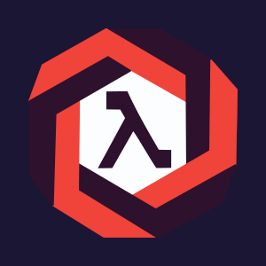
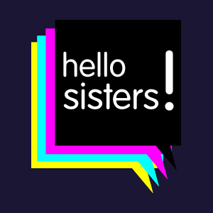

Learn Concurrent Programming with Go - James Cutajar
Hi, I’m Noe Luaces
Software Engineer
Software Engineer and open source contributor specialized in backend technologies.
Lambda Violet (2017-2020)
Lambda Violet's purpose was to provide a platform to women who work developing software where they can publish technical articles related to functional programming, testing and everything related to back-end development in general. This project is temporarily stopped pending of a new initiative that will pop out in my head 😃
Hello Sisters! (2017-2018)
The participation of women and non-binary people in local and national technical events is very low, and not at all representative of the diversity of existing professionals in the software industry. However, there is also a tendency for strictly technical and responsible jobs not to be filled by diverse professionals; causing a visibility issue. Given that “you can’t be what you don’t see,” in Hello Sisters! we defend the visibility of future professionals in the technical sector.
Logic Tree Resolver (2016-2017)
I created this project as a result of adapting my university degree to the new degree in Computer Engineering. Web Application that implements Ken Watanabe's book "Problem Solving 101" strategies in order to solve problems cooperatively and analytically, allowing diagrams to be modified concurrently, cooperating through feedback from other members of the organization, and keeping information on problems resolved available to the entire organization.
| Year | Title | Link |
|---|---|---|
| 2022 | Connect Public and Private Clusters in a Secured Application Layer with Skupper | video [eng] |
| 2022 | Ping a Programadoras: Conectando clusters privados y públicos con Skupper | video [esp] |
| 2019 | XConf Barcelona: Kotlin & Arrow | video [eng] |
| 2019 | ThoughtWorks Barcelona: Generics in Kotlin 2 {lightning talk} | slides [eng] |
| 2019 | ThoughtWorks Barcelona: Generics in Kotlin 1 {lightning talk} | slides [eng] |
| 2019 | ThoughtWorks Barcelona: What is Software Architecture? {lightning talk} | slides [eng] |
| 2019 | ThoughtWorks Barcelona: Programming Your Brain With Programming Paradigms {lightning talk} | slides [eng] |
| 2018 | Xornadas Anita Borg, UDC: Ingenieras Software | -- |
| 2017 | GDG Fest, Vigo: Descubriendo Scala | video [esp] |
| Year | Title | University |
|---|---|---|
| 2017 | Bachelor's Degree in Computer Science (CAIT) | Universidade Da Coruña (UDC) |
| 2007 | Bachelor's Degree in Informational Technology Engineering in Computer Systems | Universidade Da Coruña (UDC) |
| Year | Title | Learning Platform |
|---|---|---|
| 2021 | Kubernetes for Developers: Core Concepts | Pluralsight |
| 2021 | Go: Getting Started | Pluralsight |
| 2021 | Getting Started with Kubernetes | Pluralsight |
| 2017 | Functional Programming Principles in Scala | École Polytechnique Fédérale de Lausanne (Coursera) |